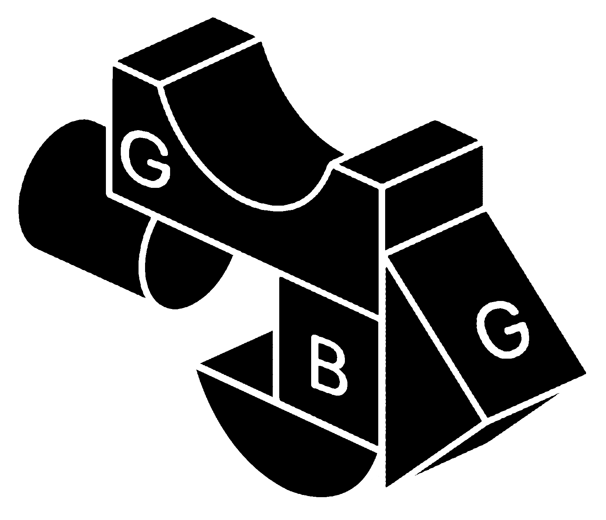

{ graphic design }
Games Beyond Games

Games Beyond Games is a game and culture-themed conference that took place at Polo del '900 in Turin, hosted by We Are Müesli as part of the Archivissima cultural festival, and defined as "A free 3-hour conference where games combine with culture in new surprising shapes". We tried to translate the concept of ricombination and convergence of different study fields with a systemic visual identity made of five building blocks. In facts, they literally are building blocks.
An event by We Are Müesli ➙.
I took part to the visual design of the promotional campaign.
Held in 2019.